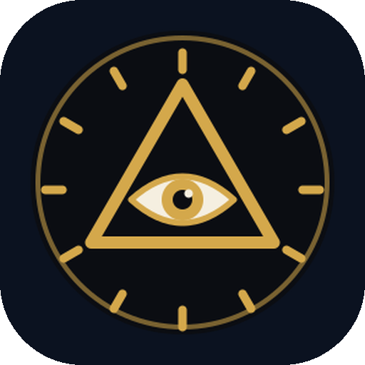

Monitor de Atividades
Entre com a mesma conta Google conectada no Monitor do computador para ver os relatórios.
Baixar o app para Android (APK)Computador
Período
JFGiralde iA Softwares · Monitor de Atividades
Veja o que aconteceu em cada computador

Entre com a mesma conta Google conectada no Monitor do computador para ver os relatórios.
Baixar o app para Android (APK)Computador
Período